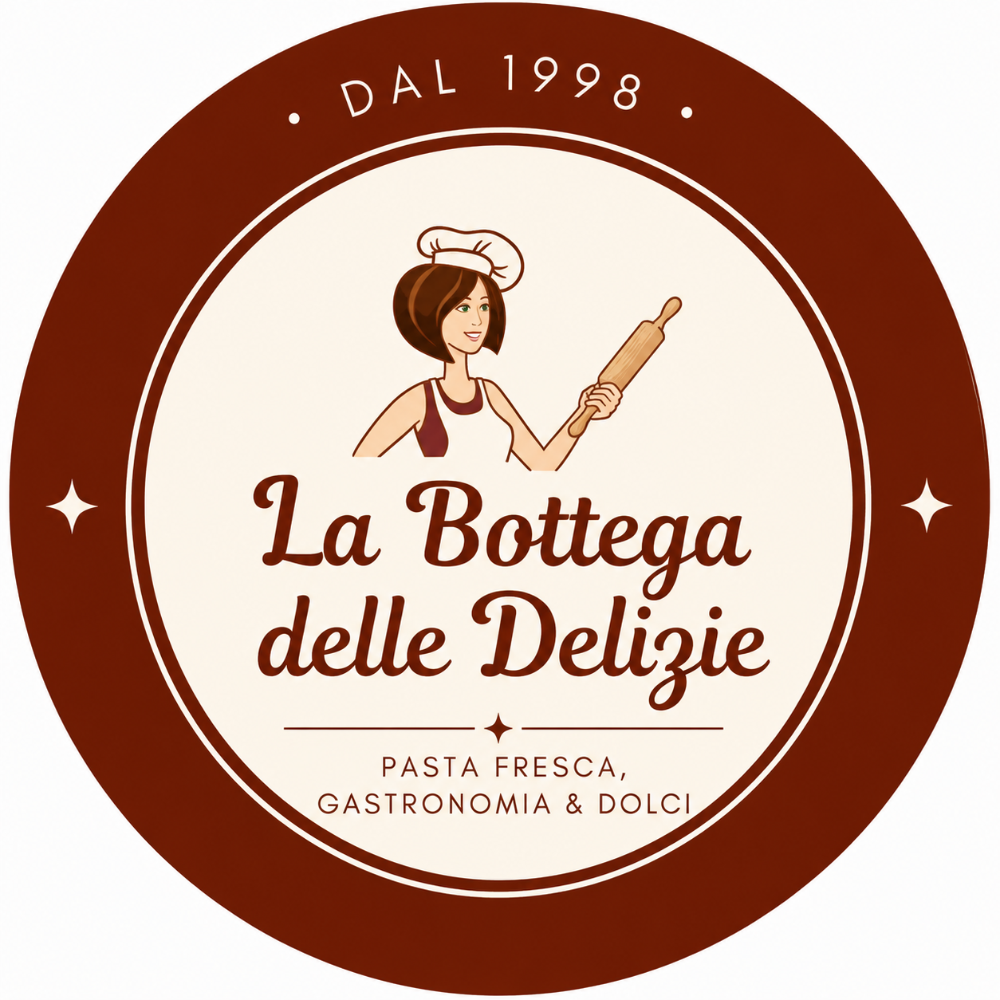
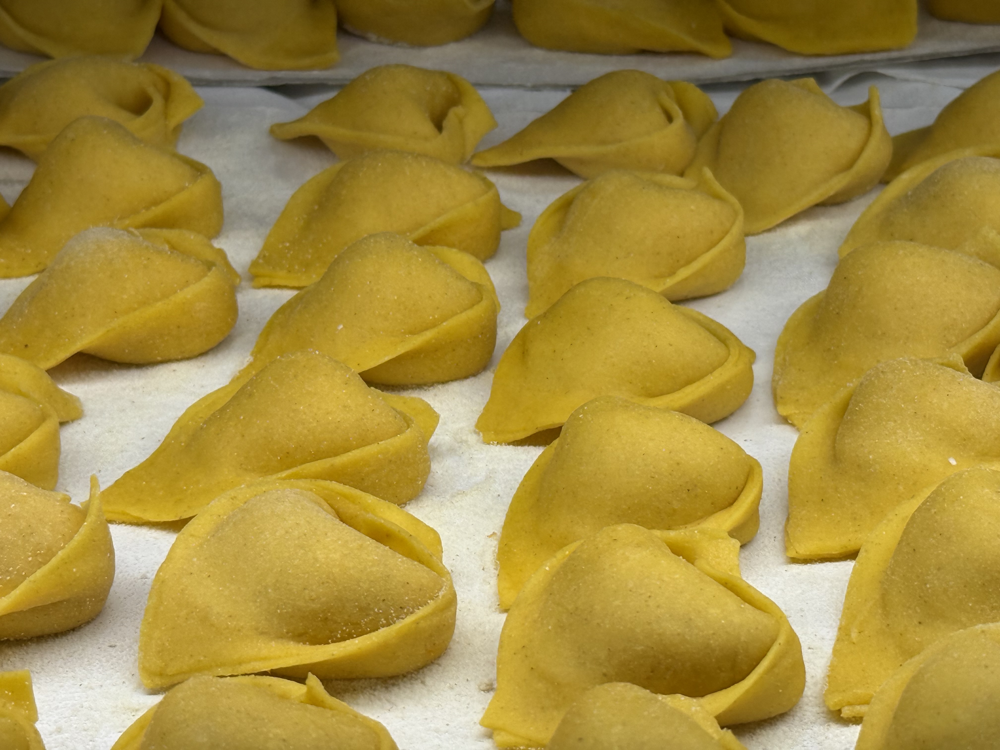
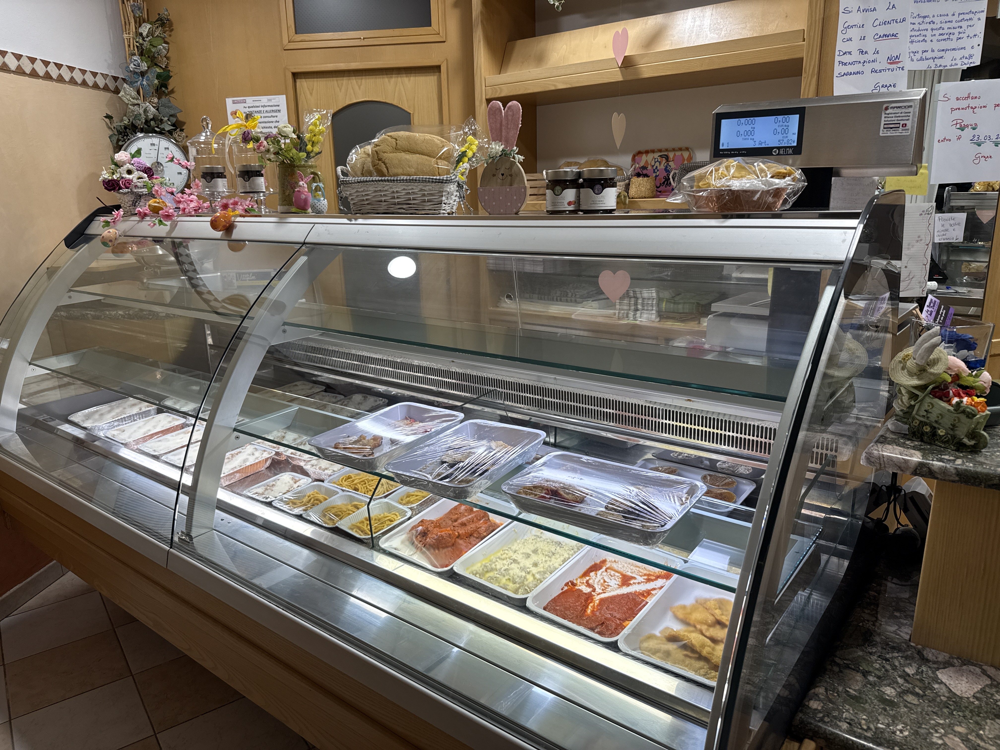
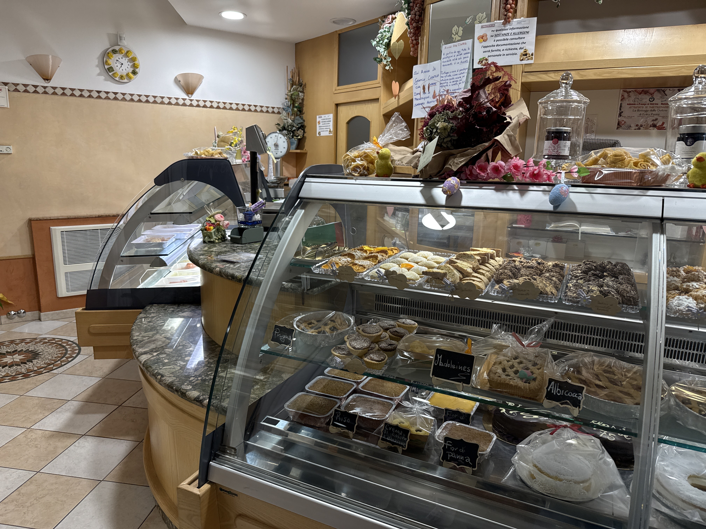

La Bottega delle DelizieDal 1998 pasta fresca, gastronomia e dolci artigianali preparati ogni giorno a Renazzo con passione e ingredienti selezionati.

Una delle specialità più amate della tradizione ferrarese, preparati artigianalmente nel nostro laboratorio.

Lasagne, pasta fresca, secondi e preparazioni quotidiane pensate per portare in tavola la cucina emiliana.

Dalla Tenerina ferrarese alle crostate e specialità della tradizione preparate con cura ogni giorno.
La Bottega delle Delizie nasce dall’amore per la cucina artigianale emiliana. Ogni giorno prepariamo pasta fresca, gastronomia e dolci con lavorazioni genuine e attenzione alla qualità.